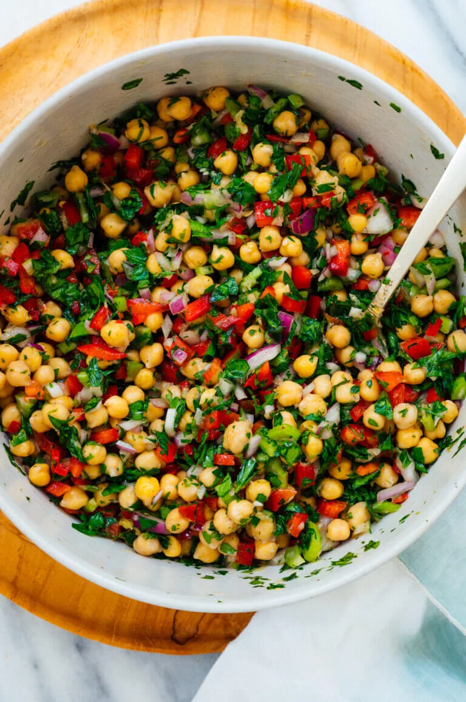

Chickpea Salad

Description
A simple chickpea salad that is bursting with fresh flavors. This salad packs well and is perfect or potlucks or picnics.
Ingredients
- 2 cans (15 ounces each) chickpeas, rinsed and drained
- 1 medium red bell pepper
- 1 1/2 cups chopped fresh flat-leaf parsley (about 1 bunch)
<1i>1/2 cup chopped red onion
- 1/2 cup chopped celery
- 3 tablespoons extra-virgin olive oil
- 3 tablespoons lemon juice
- 2 cloves garlic, pressed or minced
- 1/2 teaspoon fine salt
- freshly ground black pepper, to taste
Preperation
- In a medium bowl, combine all of the ingredients. Toss until combined. Taste and add additional lemon juice, salt, or pepper if necessary.
- Serve immediately, or chill until you’re ready to serve. Leftovers keep well, covered in the refrigerator, for up to 4 days.
Notes
Enjoy this salad as-is or serve it over greens or literally anything that could use some substance and vegetables (nachos or pasta, even). It’s nice with crumbled feta cheese as well.
Home